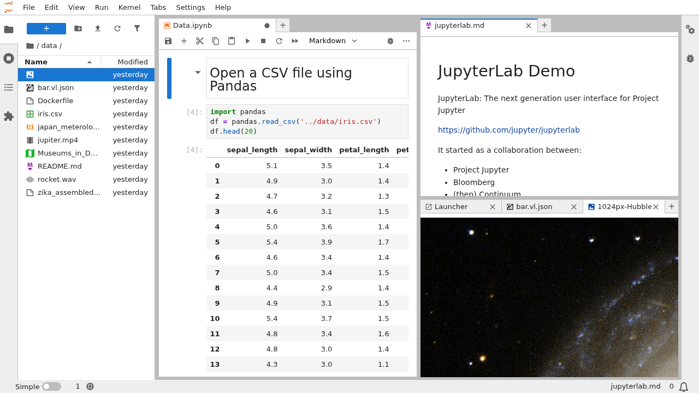
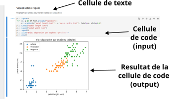
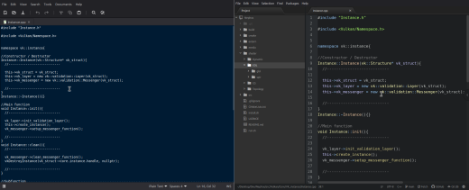
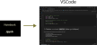
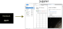
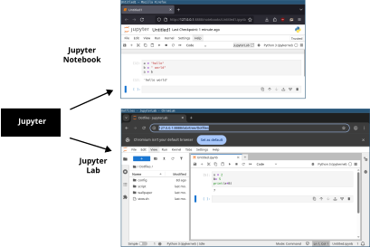
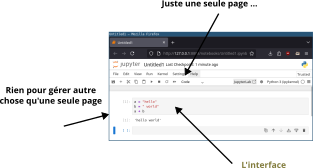
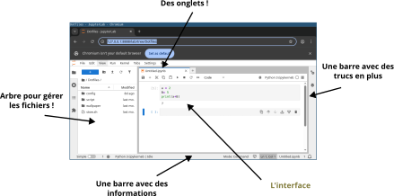

Introduction au Big Data
Vous êtes stagiaire data dans une grande entreprise.
On vous confie un dossier contenant :
On vous demande :
« Analyse ces données et explique-nous ce que tu observes. »
Analyser des données, ce n’est pas :
Analyser des données, c’est transformer des données brutes
en informations compréhensibles.
Une analyse de données, c’est :
👉 Ce cycle est itératif.
Transformer des données, c’est par exemple :
👉 Rien de tout cela n’est automatique.
Pour enchaîner ces transformations,
on a besoin d’un langage.
👉 En data science, ce langage est très souvent Python.
En Python, on n’écrit presque jamais tout à partir de zéro.
On utilise des bibliothèques, c’est-à-dire :
👉 Elles permettent de se concentrer sur l’analyse.
Sans entrer dans le détail :
Chaque bibliothèque correspond à un type de transformation.
Une analyse complète (ou pipeline) ressemble rarement à une seule action.
Elle prend plutôt la forme :
👉 Nous verrons des exemples de pipeline
Un pipeline est une suite d’étapes organisées
qui transforment des données en résultats.
Même données + mêmes étapes = mêmes résultats
Pour travailler sur ce processus de façon efficace,
il faut un environnement adapté.
C’est le role des notebooks
Analyser des données,
c’est enchaîner des transformations de manière cohérente
Un notebook sert à explorer vite (boucle courte) avant de structurer.

Un notebook est un document interactif qui permet de :
On explore avant de structurer.
Un notebook est un fichier, le plus souvent avec l’extension :
.ipynb
Ce fichier contient :
Tout est enregistré au même endroit.





Jupyter Notebook \(\neq\) Jupyter Lab


Un notebook montre :
Le notebook est un format de raisonnement interactif
5min
Dans un notebook, on ne manipule pas “des fichiers”.
On manipule des objets de données.
👉 L’objet le plus courant en data science : le DataFrame
Un DataFrame, c’est :
👉 Comme un tableau Excel… mais en mémoire
| date | id | pays | categorie | prix | qtt | |
|---|---|---|---|---|---|---|
| 0 | 2024-01-03 | C001 | France | Livre | 15.0 | 2 |
| 1 | 2024-01-03 | C002 | France | Jeu | 35.0 | 1 |
| 2 | 2024-01-04 | C003 | Espagne | Livre | 12.0 | 3 |
| 3 | 2024-01-05 | C001 | France | Jeu | 35.0 | 1 |
| 4 | 2024-01-06 | C004 | Italie | Livre | 18.0 | 1 |
Rangés
| date | id | pays | categorie | prix | qtt | |
|---|---|---|---|---|---|---|
| 0 | 2024-01-03 | C001 | France | Livre | 15.0 | 2 |
| 1 | 2024-01-03 | C002 | France | Jeu | 35.0 | 1 |
| 2 | 2024-01-04 | C003 | Espagne | Livre | 12.0 | 3 |
| 3 | 2024-01-05 | C001 | France | Jeu | 35.0 | 1 |
| 4 | 2024-01-06 | C004 | Italie | Livre | 18.0 | 1 |
colonnes
| date | id | pays | categorie | prix | qtt | |
|---|---|---|---|---|---|---|
| 0 | 2024-01-03 | C001 | France | Livre | 15.0 | 2 |
| 1 | 2024-01-03 | C002 | France | Jeu | 35.0 | 1 |
| 2 | 2024-01-04 | C003 | Espagne | Livre | 12.0 | 3 |
| 3 | 2024-01-05 | C001 | France | Jeu | 35.0 | 1 |
| 4 | 2024-01-06 | C004 | Italie | Livre | 18.0 | 1 |
donnés
Un fichier (CSV, Excel…) :
Un DataFrame :
Imagine un fichier :
ventes.csv
Quand on le charge :
Le fichier devient un DataFrame nommé par exemple : df_ventes
👉 Toute l’analyse se fait sur le DataFrame, pas sur le fichier
Un DataFrame contient :
👉 Chaque cellule = une valeur
Chaque colonne correspond à une information :
👉 Les colonnes définissent ce que tu peux analyser
Chaque ligne représente :
👉 Plus il y a de lignes, plus il y a de données
Un DataFrame peut contenir :
👉 Même structure, échelle différente
Le Big Data, ce n’est pas un type spécial de données.
Ce sont les mêmes concepts…
… mais à une échelle plus grande
Quand le volume augmente :
👉 D’où l’importance de bien structurer l’analyse
Avant toute analyse, on fait presque toujours :
👉 Comprendre avant de transformer
Dans la vraie vie, un DataFrame contient souvent :
👉 Le nettoyage est inevitable
Nettoyer des données, ce n’est pas :
C’est :
👉 Ce sont des transformations
L’analyse vient après
On peut voir le DataFrame comme :
👉 C’est le cœur du pipeline
Une analyse, c’est donc :
👉 C’est exactement ce qu’on appelle un pipeline
Le DataFrame est l’objet central
de toute analyse de données en Python.
Quand on analyse des données :
👉 alors tu ne sais pas encore quelle analyse faire.
En analyse de données,
ce n’est pas le pipeline qui compte d’abord,
mais la question qu’il sert.
Aujourd’hui, l’idée centrale est simple :
Une analyse de données, c’est un processus.
Pas une commande magique.
👉 Le code n’est qu’un moyen de rendre ce processus efficace.
La question guide le pipeline,
le pipeline guide les transformations,
les transformations produisent les résultats.
Dans la suite du cours, on va :
👉 Objectif : voir le processus “en vrai”.
On analyse des données réelles
en partant d’une question claire,
en structurant l’analyse en pipeline,
et en utilisant les outils comme des moyens —
jamais comme des objectifs.
👉 En analyse de données,
le plus important n’est pas l’outil,
mais la question que l’on cherche à résoudre.
Comment analyser des données réelles sans se perdre dans le code ni les outils ?